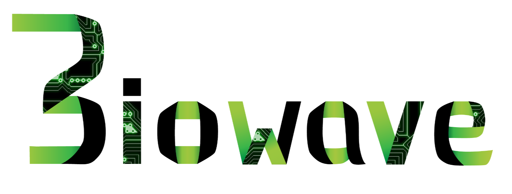
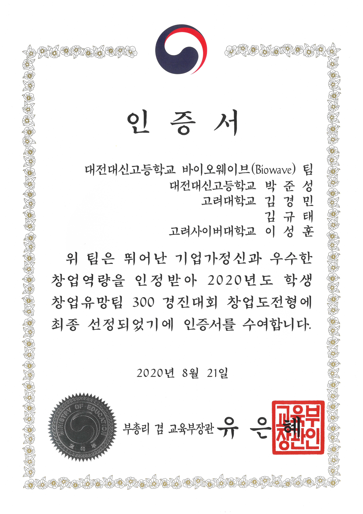
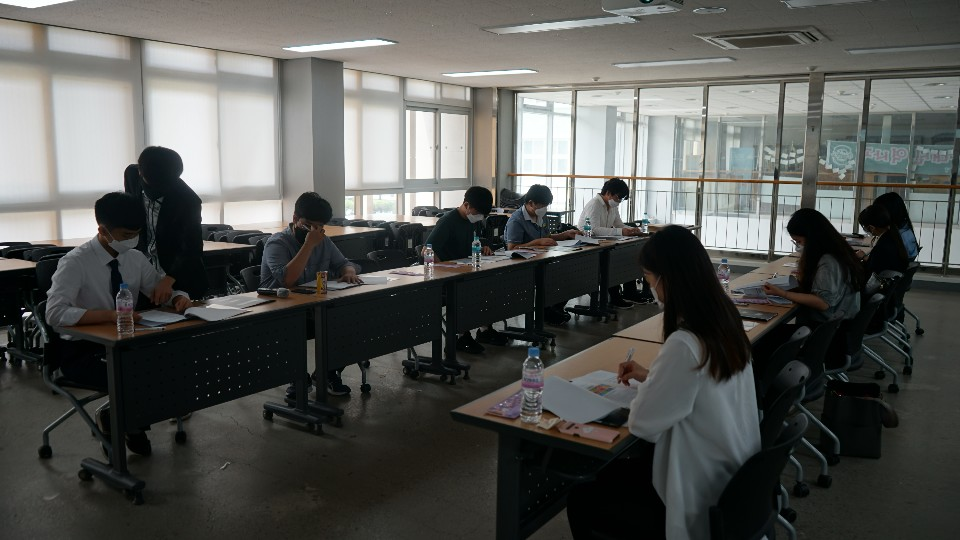
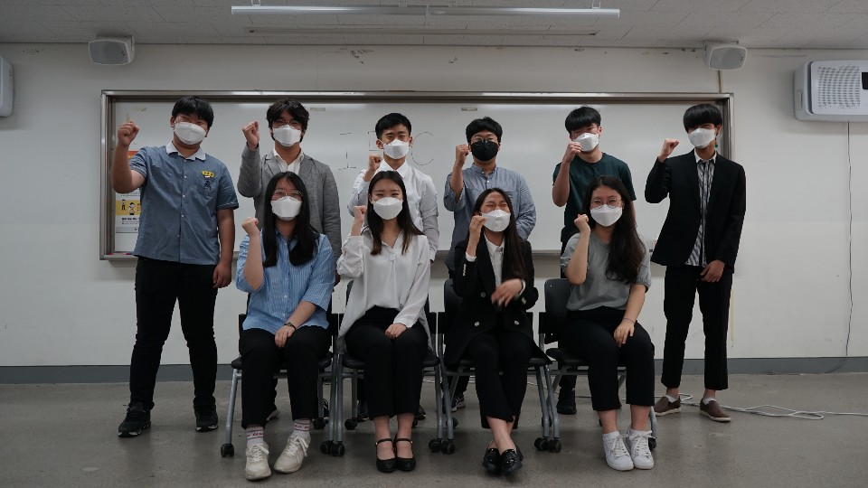
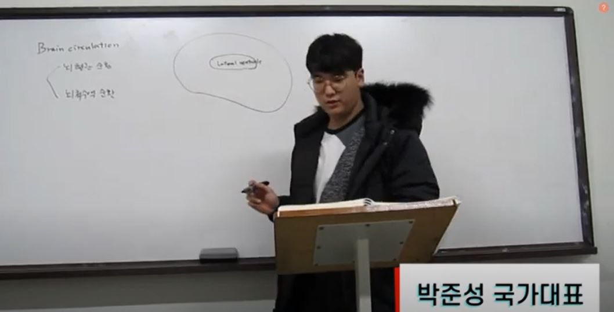
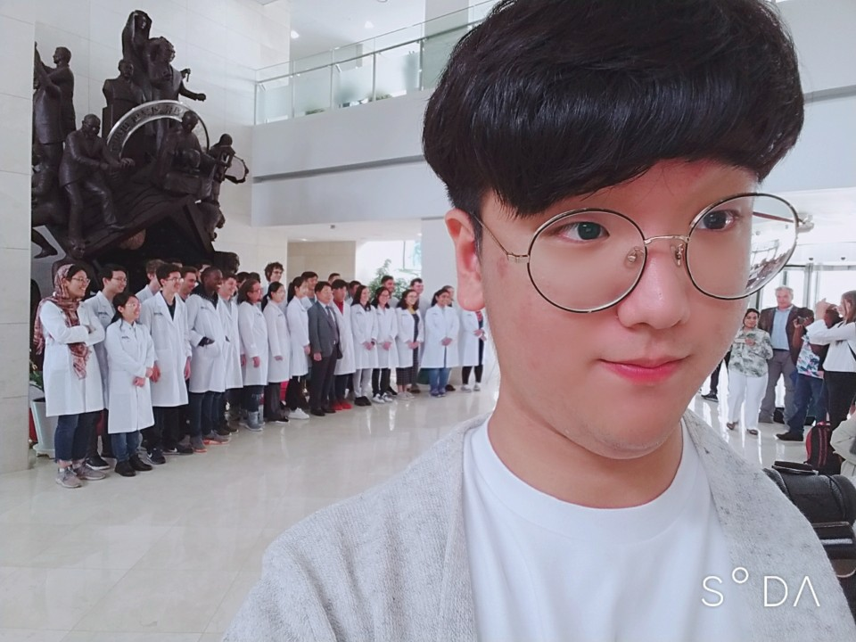
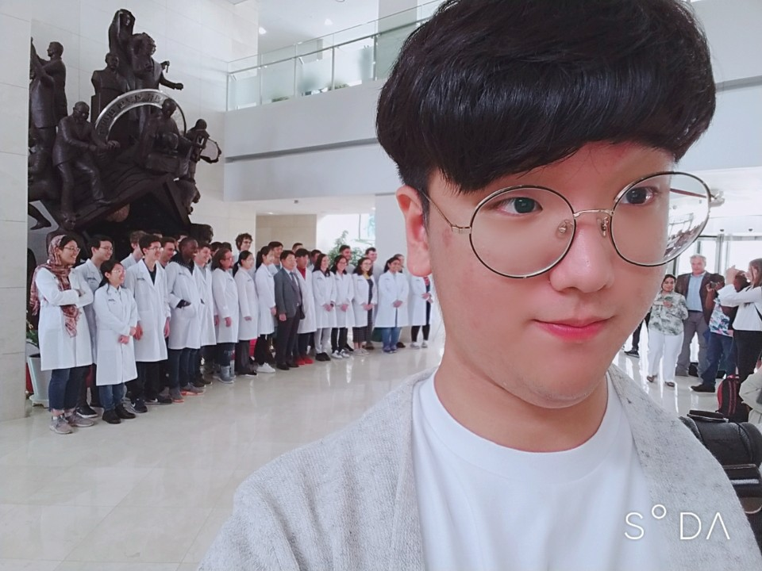

Work Experience
-
2020
Co-Founder of Biowave


-
2020
Co-Chairman of “You Will Be Found”: an online music community for COVID victims
-
2019-2020
Chairman of Personnel Committee at the International Exchange Preparatory Committee (IEPC)


-
2020
Chairman of K-Management Economy Section in Great Youth Union Forum
-
2019-2020
Academic Research Committee in Korea Youth Society of Neuroscience

-
2019
Steering committee, 2019 Brain Bee World Championship and Awards
-
2017-2018
Internship in ecology laboratory, Kongju National University
{kind=link}
{kind=link}
- Founded Biowave, Biological laboratory apparatus co., and became Principal Bio Engineer
- Developed a device that automatically performs simple experiments such as DNA extraction, PCR, etc. for less than $45.
- Responsible for tasks such as device testing and optimization, content development, and staff training.
- Selected as one of the top 35 prospective teams among student start-up companies - received a certificate from the Ministry of Education
- Collected $5 million in mock crowdfunding.
Introduction: Biowave
- Founded an online music platform for people suffering from COVID-19.
- Comforted COVID victims by uploading various music videos from professionals to amateurs.
- Planning to maintain and manage the site as a free music space after the end of the COVID situation, and to make it a large non-profit organization.
Website: You Will Be Found
{kind=link}
{kind=link}
- Currently hold the position of Chairman of the Personnel Committee at IEPC, a non-profit youth organization.
- Open recruitment of new employees, selection of project managers, and performance appraisal are the main tasks.
- Directed Korean cultural exchange conference, Online Cultural Exchange Council, and a mock G-20 summit.
Facebook: International Exchange Preparatory Committee
- Chairman of the K-management committee at the post-corona forum held by the Great Youth Union.
- Hosted and conducted forums on the market economy and management methods that have changed because of COVID.
{kind=link}

- Worked as an executive member of the Academic Research Committee at the Korea Youth Society of Neuroscience.
- Blogged about brain science, produced neuroscience homeschool material, and conducted lectures about the KBSO (Korea Brain Science Olympiad)
Facebook: Korea Youth Society of Neuroscience
 

{kind=link}
- Participated in the 2019 International Brain Bee in Daegu as a member of the steering committee.
- Acted as an assistant to the event and a national coordinator for the Korean representatives.
Website: International Brain Bee
Introduction: International Brain Bee


- Researched the growth reaction of mountain ginseng according to light sources in a plant factory.
- Learned how to study endangered species, climate change, and vulnerable species.
Website: KongJu National University